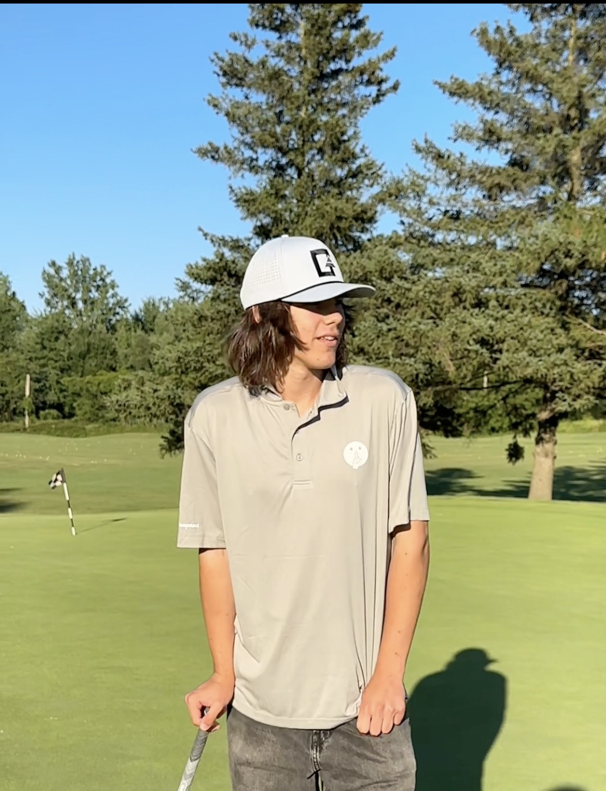

01
Golf course story
A location-based Forest City Spotlight episode. A direct Reel link and the featured location description will be attached to the published media entry.
Open @forestcityspotlight ↗Local businesses presented as stories, not just listings
A Local Business Storytelling project based in London, Ontario, created to present local businesses and places through short-form social video.

Selected Episodes
Each selected episode will pair its original published media with a short description of the featured business or place.

01
A location-based Forest City Spotlight episode. A direct Reel link and the featured location description will be attached to the published media entry.
Open @forestcityspotlight ↗